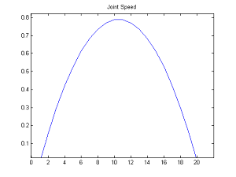
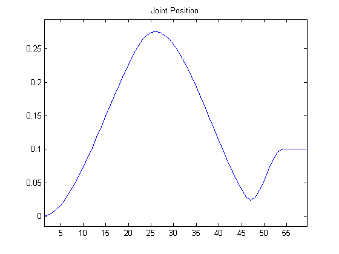
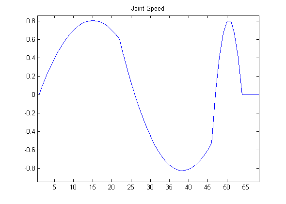

Joint control¶
NAOqi Motion - Overview | API | Tutorial
What it does¶
- There are two ways of controlling a joint or a group of joints:
- animation methods (time fixed, blocking function)
- reactive methods (could be changed every ALMotion cycle, non blocking function)
How it works¶
These API just create a higher level of the DCM actuator control and provide interpolation to have more smooth behavior.
Getting started¶
“Body”, chains and joint names¶
Joints can be controlled:
- individually, using a joint name, or
- in parallel, using a chain of joints or a group of joints like “Body”.
The table below lists the chains and all the joints included in each chain:
| Body is ... | Head + LArm + LLeg + RLeg + RArm | ||||
|---|---|---|---|---|---|
| The chain ... | Head | LArm | LLeg | RLeg | RArm |
involves the joints ... |
HeadYaw | LShoulderPitch | LHipYawPitch1 | RHipYawPitch1 | RShoulderPitch |
| HeadPitch | LShoulderRoll | LHipRoll | RHipRoll | RShoulderRoll | |
| LElbowYaw | LHipPitch | RHipPitch | RElbowYaw | ||
| LElbowRoll | LKneePitch | RKneePitch | RElbowRoll | ||
| LWristYaw2 | LAnklePitch | RAnklePitch | RWristYaw2 | ||
| LHand2 | RAnkleRoll | LAnkleRoll | RHand2 | ||
Note
1 LHipYawPitch and RHipYawPitch share the same motor so they move simultaneously and symmetrically. In case of conflicting orders, LHipYawPitch always takes the priority.
2 These joints do not exist in the NAO Body type “H21”.
The group “Body” addresses all the joints of the robot (the number of joints depends on your NAO Body type). It is possible to get the list of joints available on your robot using the ALMotionProxy::getBodyNames() method, described in the section: Case 2: Programmatic access to Joint Names.
Joint range and direction¶
Depends of your NAO Version, you could access to the joint range and direction by following the link below:
NAO V4
NAO V3.3
NAO V3.2
Use Cases¶
Case 1: Controlling Joints¶
To control a joint, you need to specify the name of the joint, the target angle in radians, and how fast you want to go to the target angle.
# -*- encoding: UTF-8 -*-
import sys
from naoqi import ALProxy
import time
import almath
def main(robotIP):
PORT = 9559
try:
motionProxy = ALProxy("ALMotion", robotIP, PORT)
except Exception,e:
print "Could not create proxy to ALMotion"
print "Error was: ",e
sys.exit(1)
motionProxy.setStiffnesses("Head", 1.0)
# Simple command for the HeadYaw joint at 10% max speed
names = "HeadYaw"
angles = 30.0*almath.TO_RAD
fractionMaxSpeed = 0.1
motionProxy.setAngles(names,angles,fractionMaxSpeed)
time.sleep(3.0)
motionProxy.setStiffnesses("Head", 0.0)
if __name__ == "__main__":
robotIp = "127.0.0.1"
if len(sys.argv) <= 1:
print "Usage python almotion_controllingjoints.py robotIP (optional default: 127.0.0.1)"
else:
robotIp = sys.argv[1]
main(robotIp)

|
 |
Case 2: Timed Interpolations¶
When you know in advance the trajectory that you want to follow, the ALMotionProxy::angleInterpolation() and ALMotionProxy::angleInterpolationWithSpeed() methods can be used to set up an interpolation.
# Example showing a joint trajectory with a single destination
names = "HeadYaw"
angleLists = 1.0
times = 1.0
isAbsolute = True
proxy.angleInterpolation(names, angleLists, times, isAbsolute)
You can command multiple joints in one command, by using a single time, and a number of target angles equal to the number of joints.
# Example showing a command for the two joints in the 'Head' alias
# 'Head' is expanded to ['HeadYaw','HeadPitch']
names = "Head"
angleLists = [-1.0,-1.0]
times = 1.0
isAbsolute = True
proxy.angleInterpolation(names, angleLists, times, isAbsolute)
The same command can take a list of angles with corresponding times.
# Shake the head from side to side
names = "HeadYaw"
angleLists = [1.0, -1.0, 1.0, -1.0, 0.0]
times = [1.0, 2.0, 3.0, 4.0, 5.0]
isAbsolute = True
proxy.angleInterpolation(names, angleLists, times, isAbsolute)
Similarly, trajectories can be specified for multiple joints.
# Two trajectories in one command. Each trajectory must have a
# corresponding number of times
names = ["HeadYaw", "HeadPitch"]
angleLists = [[1.0, -1.0, 1.0, -1.0], [-1.0]]
times = [[1.0, 2.0, 3.0, 4.0], [ 5.0]]
isAbsolute = True
proxy.angleInterpolation(names, angleLists, times, isAbsolute)
Case 3: Reactive Control¶
The commands ALMotionProxy::setAngles() and ALMotionProxy::changeAngles(), do not block the calling thread. This makes them ideal for being called often in reactive control loops, such as head tracking. You can call them often, with contradictory commands, and motion will ensure that the trajectory is smooth in position and continuous in velocity.
# -*- encoding: UTF-8 -*-
import sys
import time
from naoqi import ALProxy
def main(robotIP):
PORT = 9559
try:
motionProxy = ALProxy("ALMotion", robotIP, PORT)
except Exception,e:
print "Could not create proxy to ALMotion"
print "Error was: ",e
sys.exit(1)
motionProxy.setStiffnesses("Head", 1.0)
# Example simulating reactive control
names = "HeadYaw"
angles = 0.3
fractionMaxSpeed = 0.1
motionProxy.setAngles(names,angles,fractionMaxSpeed)
# wait half a second
time.sleep(0.5)
# change target
angles = 0.0
motionProxy.setAngles(names,angles,fractionMaxSpeed)
# wait half a second
time.sleep(0.5)
# change target
angles = 0.1
motionProxy.setAngles(names,angles,fractionMaxSpeed)
time.sleep(3.0)
motionProxy.setStiffnesses("Head", 0.0)
if __name__ == "__main__":
robotIp = "127.0.0.1"
if len(sys.argv) <= 1:
print "Usage python almotion_reactivecontrol.py robotIP (optional default: 127.0.0.1)"
else:
robotIp = sys.argv[1]
main(robotIp)
|  |  |
It is also possible to use time with angleInterpolation to do reactive control.
almotion_angleinterpolationreactif.py
# -*- encoding: UTF-8 -*-
import sys
import time
from naoqi import ALProxy
import almath
def main(robotIP):
PORT = 9559
try:
motionProxy = ALProxy("ALMotion", robotIP, PORT)
except Exception,e:
print "Could not create proxy to ALMotion"
print "Error was: ",e
sys.exit(1)
motionProxy.setStiffnesses("Head", 1.0)
# Head Start to zeros
names = "Head"
targetAngles = [0.0, 0.0]
maxSpeedFraction = 0.2 # Using 20% of maximum joint speed
motionProxy.angleInterpolationWithSpeed(names, targetAngles, maxSpeedFraction)
# Example showing a reactive control with time function angleInterpolation
# Goal: after 1.0 second, retarget from 40 to 0 degree: smooth transition
# Interpolate the head yaw to 20 degrees in 2.0 seconds
# With post, angleInterpolation become non-blocking
names = "HeadYaw"
angleLists = 20.0*almath.TO_RAD
timeLists = 2.0
isAbsolute = True
motionProxy.post.angleInterpolation(names, angleLists, timeLists, isAbsolute)
time.sleep(0.5)
# Call getTaskList to have the previous angleInterpolation task number
taskList = motionProxy.getTaskList()
# Prepare the next target to 50.0 degrees in 1.0 second
angleLists = 50.0*almath.TO_RAD
timeLists = 1.0
motionProxy.post.angleInterpolation(names, angleLists, timeLists, isAbsolute)
time.sleep(0.5)
# Kill the first angleInterpolation (go to 40.0 degrees), the second start
# smoothly from the current joint position and velocity (go to 0 degrees)
motionProxy.killTask(taskList[0][1])
time.sleep(2.0)
motionProxy.setStiffnesses("Head", 0.0)
if __name__ == "__main__":
robotIp = "127.0.0.1"
if len(sys.argv) <= 1:
print "Usage python almotion_angleinterpolationreactif.py robotIP (optional default: 127.0.0.1)"
else:
robotIp = sys.argv[1]
main(robotIp)